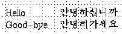

![[Input Style: Off-the-Spot]](../images/xim-off-the-spot.gif)
![[Input Style: Over-the-Spot]](../images/xim-over-the-spot.gif)

[ English Version | Japanese Version ]
[ Contents
| Operating Manual
| New Features and Bugs Fixed
| Technical Informations
| Authors ]
[ オプション、及びリソース
| インストール
| FAQ
| 日本語への対応 (あるいは国際化?)
| Fig Format 3.2 ]
日本語対応機能に関する質問などは、 VEF00200@nifty.ne.jp へお送り下さい。 日本のユーザーは、xfig そのものに関する質問なども この宛先へ送られても結構です。
% japanese.ps for fig2dev 3.2
16 dict begin
/FontName /CompositeRoman def /FontType 0 def
/WMode 0 def /FMapType 3 def /FontMatrix matrix def
/Encoding [0 1] def
/FDepVector [ /Times-Roman findfont
/Ryumin-Light-EUC-H findfont ] def
FontName currentdict
end
definefont pop
16 dict begin
/FontName /CompositeBold def /FontType 0 def
/WMode 0 def /FMapType 3 def /FontMatrix matrix def
/Encoding [0 1] def
/FDepVector [ /Times-Bold findfont
/GothicBBB-Medium-EUC-H findfont ] def
FontName currentdict
end
definefont pop
% end of japanese.ps
-international オプションを指定しなかった場合には、 通常の xfig と同様に動作します。 リソース・ファイルに ``Fig.international: true'' のような行を追加しておけば、 -international オプションは不要となります。
日本語の入力は、TEXT モードにおいて テキストを入力する状態となっている時に、 日本語入力モードに切り替えるためのキーを押すことによって開始します。 どのキーを押すと日本語入力モードに切り替えられるかは 環境に依存しますが、 Shift-SPACE、Control-SPACE、Control-O、Control-\ などの いずれかとなっていることが多いものと思われます。 変換の方法なども環境に依存しますが、 通常はその環境における他のアプリケーションでの操作と共通となります。
入力のスタイルとしては Off the Spot、Over the Spot、 及び Root のいずれかを使用することができ、 どのスタイルを使用するかは inputStyle リソース、 もしくは -inputStyle オプションによって指定することができます。 例えば、xfig -international -inputStyle OverTheSpot とすると、 Over the Spot での入力を行なうようになります。
Fig.normalFontSet: -*-times-medium-r-normal--16-*-*-*-*-*-*-*,\
-*-*-medium-r-normal--16-*-*-*-*-*-*-*,\
-*-*-*-r-*--16-*-*-*-*-*-*-*
Fig.boldFontSet: -*-times-bold-r-normal--16-*-*-*-*-*-*-*,\
-*-*-bold-r-normal--16-*-*-*-*-*-*-*,\
-*-*-*-r-*--16-*-*-*-*-*-*-*
しかし、このデフォルトの指定では 環境によってはあまり好ましくないフォントがロードされてしまう (好ましくない字体で表示されたり、xfig の起動に時間がかかったりする) 可能性もあります。 そのような場合には、リソース・ファイル (app-defaults/Fig) で フォントをより具体的に指定することによって、 指定したフォントをロードさせることが可能です:
Fig*FontSet: -misc-fixed-medium-r-normal--14-*-*-*-*-*-*-*
Fig.normalFontSet: -*-times-medium-r-normal--14-*-*-*-*-*-*-*,\
-misc-fixed-medium-r-normal--14-*-*-*-*-*-*-*
Fig.boldFontSet: -*-times-bold-r-normal--14-*-*-*-*-*-*-*,\
-misc-fixed-medium-r-normal--14-*-*-*-*-*-*-*
Fig.fontSetSize: 14
また、スケーラブルな日本語フォントが使用可能である場合 (例えば VFlib に対応した X サーバーを使用している場合など) には、次のように大きなフォントを指定することによって 文字の表示品質を改善することも可能です:
Fig*FontSet: -*-times-medium-r-normal--16-*-*-*-*-*-*-*,\
-foobar-mincho-medium-r-normal--16-*-*-*-*-*-*-*
Fig.normalFontSet: -*-times-medium-r-normal--64-*-*-*-*-*-*-*,\
-foobar-mincho-medium-r-normal--64-*-*-*-*-*-*-*
Fig.boldFontSet: -*-times-bold-r-normal--64-*-*-*-*-*-*-*,\
-foobar-gothic-medium-r-normal--64-*-*-*-*-*-*-*
Fig.fontSetSize: 64
フォントの指定に際しては、 normalFontSet、及び boldFontSet に 同じサイズのフォントを指定し、かつ fontSetSize にそのサイズを設定する必要があることに注意して下さい。
この指定は上記の japanese.ps ファイル に 書かれており、そのファイルを書き換えることによって 他のフォントに変更することができます。
例えば、/Ryumin-Light-EUC-H を /HeiseiMin-W3-EUC-H に、 /GothicBBB-Medium-EUC-H を /HeiseiKakuGo-W5-EUC-H に 書き換えれば、明朝体のフォントとして HeiseiMin-W3 を、 ゴシック体のフォントとして HeiseiKakuGo-W5 を使用するようになります。
.Xdefaults などで ``*international: true'' のような設定が行なわれている場合には、 明示的に ``Fig*international: false'' と指定する 必要があるかも知れません。
--------------------------------------------------
Operating System X Input Method
--------------------------------------------------
SunOS 4.1 X11R6 kinput2
Solaris 2.5 X11R6 kinput2
Solaris 2.5-2.6 OpenWindows/CDE htt/ATOK
HP-UX 10.20 X11R6 kinput2
IRIX 6.3* X11R6 kinput2
FreeBSD 2.2 X11R6 kinput2
Slackware Linux 3.1 X11R6 kinput2
RedHat Linux 4.2 X11R6 kinput2
--------------------------------------------------
* IRIX 6.3 では、IRIX の純正の cc (gcc ではなく) を用いて、 コンパイル・オプションとして -N32 -mips3 を指定して コンパイルする必要があるかも知れません。 また、IRIX に含まれている JPEG ライブラリを使用せずに、 JPEG ライブラリのソースを入手してコンパイルする必要があるかも知れません。

fig2dev はこれとは別ですが、 その言語に対応した LaTeX、及び/もしくは PostScript プリンタがあるならば、 僅かな変更でその言語に対応させられるものと思われます。
日本語以外の言語への対応を考えている方、 もしくは日本語以外の言語での動作を確認された方は、 VEF00200@nifty.ne.jp に連絡して下さい。
![[Input Style: Root]](../images/xim-root.gif)